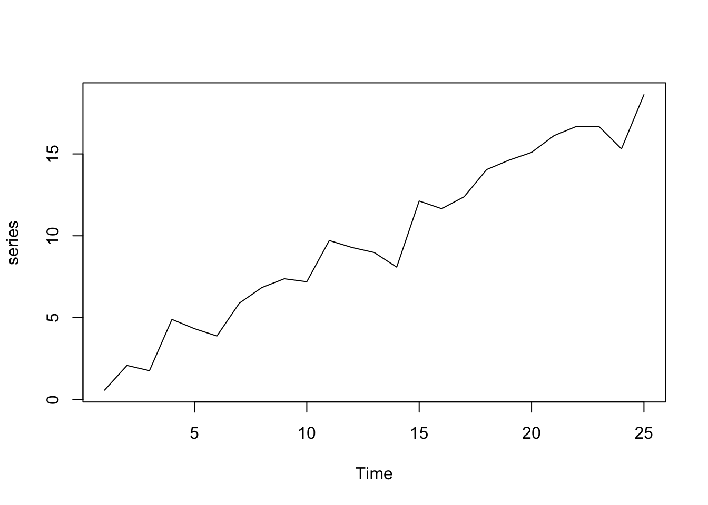
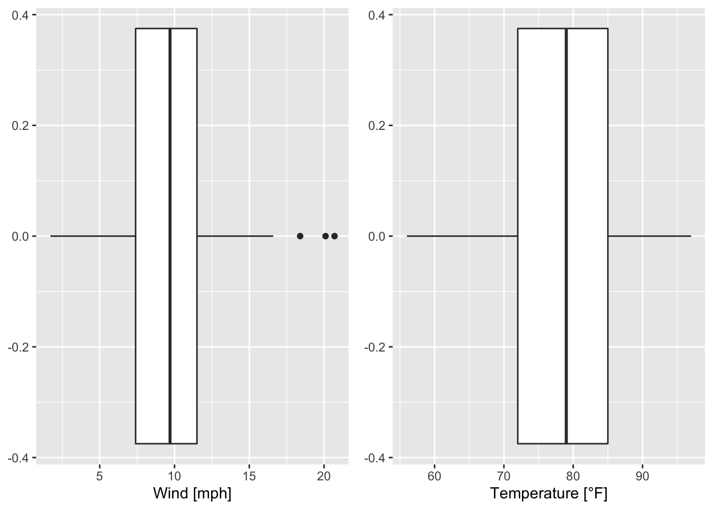
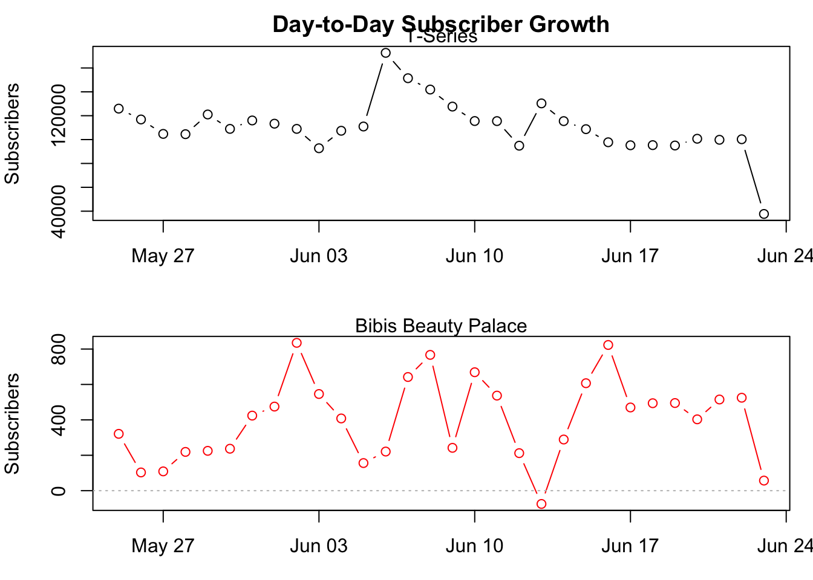
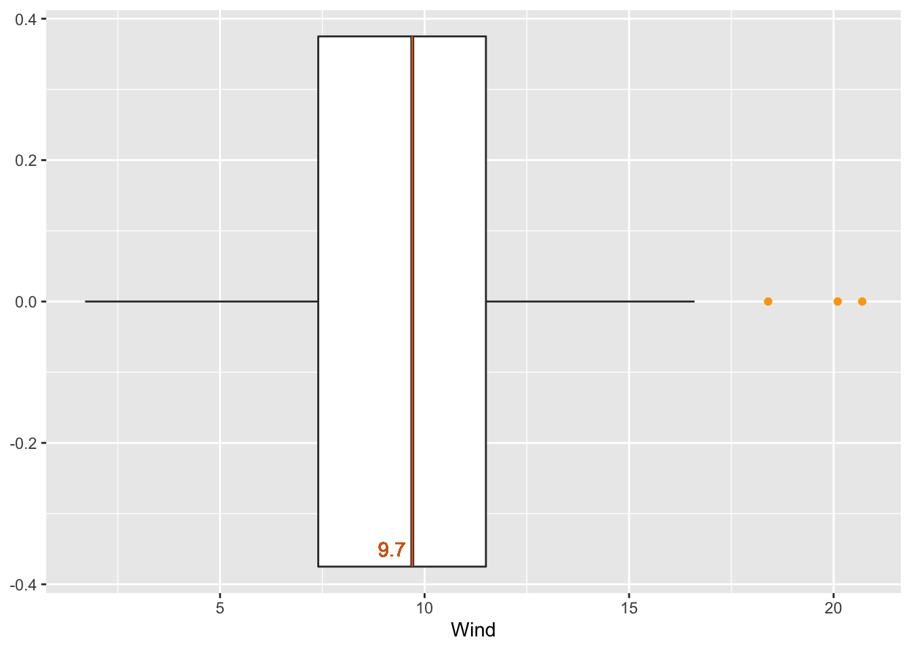

7.3 Histograms and boxplots
The creation of histograms in ggplot2 is allowed by the geom geom_histogram() which is exemplarily applied to the wind speed and temperature of the airquality data set (R Core Team 2021). The arrangement of ggplots (on top of each other, side by side, …) is achieved by using an extra R package called gridExtra (Auguie 2017):
g1 <- ggplot(data = airquality)+
geom_histogram(mapping = aes(x = Wind))
g2 <- ggplot(data = airquality)+
geom_histogram(mapping = aes(x = Temp), binwidth = 5)
grid.arrange(g1, g2, ncol = 2) # arrange both histograms in one row#R> `stat_bin()` using `bins = 30`. Pick better value with `binwidth`.
Since the two boxplots have been assigned to g1 and g2, respectively, again, information can be received by applying ggplot_build():
#R> [[1]]
#R> y count x xmin xmax density ncount ndensity flipped_aes PANEL group
#R> 1 4 4 55 52.5 57.5 0.005228758 0.1081081 0.1081081 FALSE 1 -1
#R> 2 9 9 60 57.5 62.5 0.011764706 0.2432432 0.2432432 FALSE 1 -1
#R> 3 12 12 65 62.5 67.5 0.015686275 0.3243243 0.3243243 FALSE 1 -1
#R> 4 14 14 70 67.5 72.5 0.018300654 0.3783784 0.3783784 FALSE 1 -1
#R> 5 29 29 75 72.5 77.5 0.037908497 0.7837838 0.7837838 FALSE 1 -1
#R> 6 37 37 80 77.5 82.5 0.048366013 1.0000000 1.0000000 FALSE 1 -1
#R> 7 26 26 85 82.5 87.5 0.033986928 0.7027027 0.7027027 FALSE 1 -1
#R> 8 15 15 90 87.5 92.5 0.019607843 0.4054054 0.4054054 FALSE 1 -1
#R> 9 7 7 95 92.5 97.5 0.009150327 0.1891892 0.1891892 FALSE 1 -1
#R> ymin ymax colour fill size linetype alpha
#R> 1 0 4 NA grey35 0.5 1 NA
#R> 2 0 9 NA grey35 0.5 1 NA
#R> 3 0 12 NA grey35 0.5 1 NA
#R> 4 0 14 NA grey35 0.5 1 NA
#R> 5 0 29 NA grey35 0.5 1 NA
#R> 6 0 37 NA grey35 0.5 1 NA
#R> 7 0 26 NA grey35 0.5 1 NA
#R> 8 0 15 NA grey35 0.5 1 NA
#R> 9 0 7 NA grey35 0.5 1 NAwhere
countdescribes the number of points (values) in the bin,the intervals of the single bins are defined as (
xmin,xmax] which is thebinwidth(Since we have definedbinwidth = 5, all intervals have the same size (5).),xis the center of the interval andmuch more information.
#R> [1] "list"Instead of defining the binwidth we can specify the number of bins (argument bins), e.g.:
Then, the number of rows in
#R> y count x xmin xmax density ncount ndensity
#R> 1 1 1 54.66667 52.38889 56.94444 0.001434720 0.02941176 0.02941176
#R> 2 10 10 59.22222 56.94444 61.50000 0.014347202 0.29411765 0.29411765
#R> 3 10 10 63.77778 61.50000 66.05556 0.014347202 0.29411765 0.29411765
#R> 4 12 12 68.33333 66.05556 70.61111 0.017216643 0.35294118 0.35294118
#R> 5 19 19 72.88889 70.61111 75.16667 0.027259684 0.55882353 0.55882353
#R> 6 28 28 77.44444 75.16667 79.72222 0.040172166 0.82352941 0.82352941
#R> 7 34 34 82.00000 79.72222 84.27778 0.048780488 1.00000000 1.00000000
#R> 8 20 20 86.55556 84.27778 88.83333 0.028694405 0.58823529 0.58823529
#R> 9 15 15 91.11111 88.83333 93.38889 0.021520803 0.44117647 0.44117647
#R> 10 4 4 95.66667 93.38889 97.94444 0.005738881 0.11764706 0.11764706
#R> flipped_aes PANEL group ymin ymax colour fill size linetype alpha
#R> 1 FALSE 1 -1 0 1 NA grey35 0.5 1 NA
#R> 2 FALSE 1 -1 0 10 NA grey35 0.5 1 NA
#R> 3 FALSE 1 -1 0 10 NA grey35 0.5 1 NA
#R> 4 FALSE 1 -1 0 12 NA grey35 0.5 1 NA
#R> 5 FALSE 1 -1 0 19 NA grey35 0.5 1 NA
#R> 6 FALSE 1 -1 0 28 NA grey35 0.5 1 NA
#R> 7 FALSE 1 -1 0 34 NA grey35 0.5 1 NA
#R> 8 FALSE 1 -1 0 20 NA grey35 0.5 1 NA
#R> 9 FALSE 1 -1 0 15 NA grey35 0.5 1 NA
#R> 10 FALSE 1 -1 0 4 NA grey35 0.5 1 NAis equal to bins = 10.
The creation and examination of boxplots works similarily:
g1 <- ggplot(data = airquality)+
geom_boxplot(mapping = aes(x = Wind)) + labs(x = "Wind [mph]")
g2 <- ggplot(data = airquality)+
geom_boxplot(mapping = aes(x = Temp)) + labs(x = "Temperature [°F]")
grid.arrange(g1, g2, ncol = 2)
The boxplots can be flipped by using coord_flip() the following way:
g1 <- ggplot(data = airquality)+
geom_boxplot(mapping = aes(x = Wind)) + labs(x = "Wind [mph]")+
coord_flip() # flip coordinates
g2 <- ggplot(data = airquality)+
geom_boxplot(mapping = aes(x = Temp)) + labs(x = "Temperature [°F]")+
coord_flip() # flip coordinates
grid.arrange(g1, g2, ncol = 2)
Again, the data of the boxplot can be accessed as we already know:
#R> [1] "list"#R> 'data.frame': 1 obs. of 26 variables:
#R> $ xmin : num 1.7
#R> $ xlower : num 7.4
#R> $ xmiddle : num 9.7
#R> $ xupper : num 11.5
#R> $ xmax : num 16.6
#R> $ outliers :List of 1
#R> ..$ : num 20.1 18.4 20.7
#R> $ notchupper : num 10.2
#R> $ notchlower : num 9.18
#R> $ y : num 0
#R> $ flipped_aes: logi TRUE
#R> $ PANEL : Factor w/ 1 level "1": 1
#R> $ group : int -1
#R> $ xmin_final : num 1.7
#R> $ xmax_final : num 20.7
#R> $ ymin : num -0.375
#R> $ ymax : num 0.375
#R> $ xid : num 1
#R> $ newx : num 0
#R> $ new_width : num 0.75
#R> $ weight : num 1
#R> $ colour : chr "grey20"
#R> $ fill : chr "white"
#R> $ size : num 0.5
#R> $ alpha : logi NA
#R> $ shape : num 19
#R> $ linetype : chr "solid"#R> xmin xlower xmiddle xupper xmax outliers notchupper notchlower y
#R> 1 1.7 7.4 9.7 11.5 16.6 20.1, 18.4, 20.7 10.22372 9.176285 0
#R> flipped_aes PANEL group xmin_final xmax_final ymin ymax xid newx new_width
#R> 1 TRUE 1 -1 1.7 20.7 -0.375 0.375 1 0 0.75
#R> weight colour fill size alpha shape linetype
#R> 1 1 grey20 white 0.5 NA 19 solidConsequently, the outliers are extracted by:
#R> [[1]]
#R> [1] 20.1 18.4 20.7Based on boxplot_g1 interesting values can be marked:
wind_boxplot <- ggplot(data = airquality)+
geom_boxplot(mapping = aes(x = Wind), outlier.colour = "orange")+ # coloring outliers
geom_segment(data = boxplot_g1, mapping = aes(x = xmiddle, xend = xmiddle,
y = ymin, yend = ymax), colour = "chocolate")+ # ymin, ymax: coordinates of box
geom_text(x = 9.2, y = -0.35, label = paste(boxplot_g1$xmiddle), color = "chocolate")+
theme(axis.title.y = element_blank()) # remove title of y-axis
wind_boxplot # call the defined boxplot
Question(s):
Which values have been marked in the previous boxplot (figure xx)?
References
Auguie, Baptiste. 2017. GridExtra: Miscellaneous Functions for "Grid" Graphics. https://CRAN.R-project.org/package=gridExtra.
R Core Team. 2021. R: A Language and Environment for Statistical Computing. Vienna, Austria: R Foundation for Statistical Computing. https://www.R-project.org/.